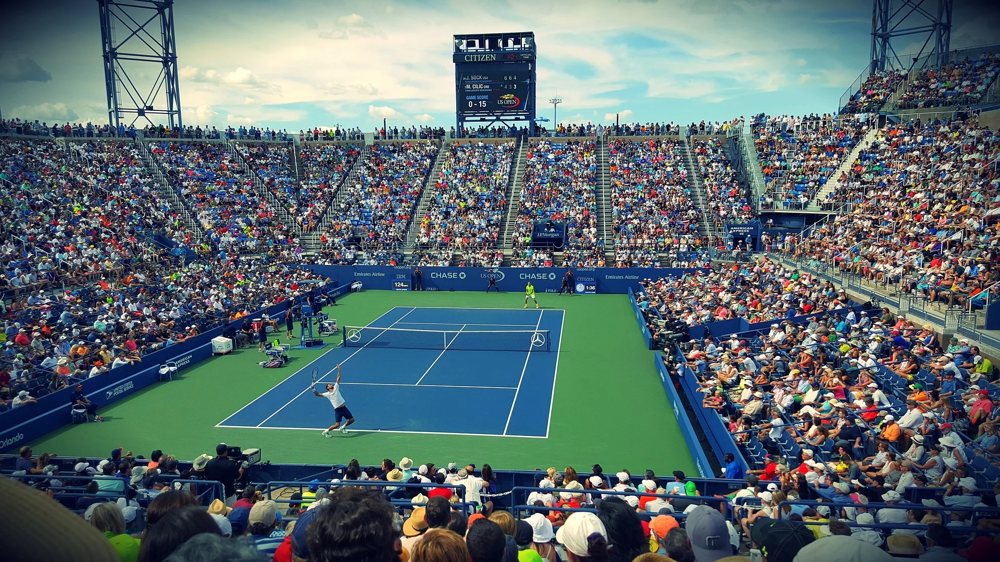
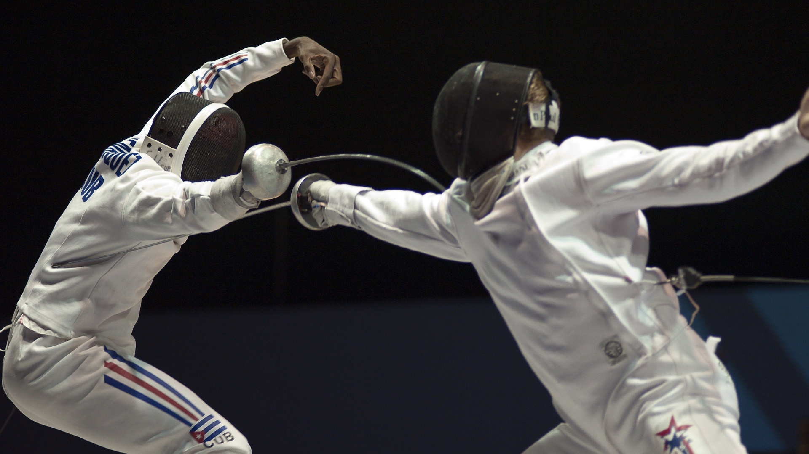

Futebol
No mundo, nosso país é rotulado como o país do Futebol. Em um artigo sobre recomendações de esportes, ele não poderia faltar!
O futebol é um esporte jogado entre duas equipes de 11 jogadores cada, com o objetivo de marcar gols no gol adversário. O jogo tem dois tempos de 45 minutos, com acréscimos. Os jogadores não podem usar as mãos (exceto o goleiro dentro da área) e devem marcar gols chutando a bola com qualquer parte do corpo. O impedimento ocorre quando um jogador está à frente da bola e do penúltimo defensor no momento do passe. Faltas resultam em tiros livres ou pênaltis para a equipe adversária, e cartões amarelos ou vermelhos podem ser dados aos jogadores como punição. O jogo é reiniciado com tiros de meta, escanteios e arremessos laterais.
Tênis
Um esporte não tão praticado aqui no Brasil, merece ser mencionado, pois faz muito bem a saúde física e mental, já que é necessário muita movimentação e reflexo.

O tênis é um esporte jogado entre dois jogadores (singles) ou duas duplas (duplas). O objetivo é acertar a bola por cima da rede, dentro das linhas da quadra, fazendo com que o adversário não consiga devolvê-la corretamente. O jogo começa com um saque e os jogadores trocam a bola, tentando marcar pontos. A pontuação é contada em 15, 30, 40 e jogo. É necessário vencer quatro pontos para ganhar um game e seis games para vencer um set. O jogo continua até que um jogador vença dois ou três sets (dependendo do torneio) para ganhar a partida. A bola é considerada fora se tocar fora das linhas da quadra. O toque na rede é proibido, e se um jogador não conseguir devolver a bola antes que ela quique duas vezes em sua quadra, o adversário ganha o ponto. O tênis é conhecido por sua velocidade, técnica e estratégia.
Esgrima
Um esporte praticamente esquecido aqui no Brasil e que muitos brasileiros nem o conhecem, também vale ser mencionado, pois treina muito a concentração.

A esgrima é um esporte de combate individual onde os competidores usam espadas para marcar pontos. Existem três disciplinas: florete, espada e sabre. Cada disciplina tem suas próprias regras, mas todas envolvem tentar acertar o oponente enquanto se defende de ataques. Os pontos são marcados ao tocar o adversário com a ponta ou a lâmina da espada, dependendo da disciplina. A esgrima requer velocidade, agilidade e habilidades técnicas refinadas. É um esporte estratégico onde a antecipação e a tomada de decisão rápida são fundamentais.
Rugby
A primeira impressão que se tem sobre o tal, é que um "Futebol Americano" mas sem as "armaduras", fazendo um pouco de sentido pois ambos são bem parecidos.
O rugby é um esporte de equipe jogado entre duas equipes de quinze jogadores cada. O objetivo é avançar com a bola oval em direção à linha de meta adversária e marcar pontos. Os jogadores podem correr com a bola, passá-la para trás ou chutá-la. O jogo é físico e intenso, com tackles sendo uma parte importante. O objetivo é marcar tries (tocar a bola no chão além da linha de meta) para ganhar pontos. Os pontos também podem ser obtidos através de chutes de conversão, penalidades e drop goals. O rugby é um esporte estratégico, exigindo força, habilidade e trabalho em equipe.